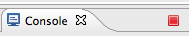

pécédentsuivant
action
action = voir au dos (explication complémentaires, solutions, ...)
action
action = voir au dos (explication complémentaires, solutions, ...)


Didier Girard, Ludovic Champenois, Martin Görner, Patrice de Saint Steban
Pour ceci vous disposez d'une plateforme, Google AppEngine et d'experts pour vous guider.
Le défi est à relever en 3 heures seulement.
Prêt à relever le défi ?
Pré-requis:
• JDK 6 (pas JRE)
• Eclipse 3.7 (Indigo, JEE version)
• Google Plugin for Eclipse 3.7 et Google App Engine Java SDK 1.6.4
disponibles depuis le référentiel http://dl.google.com/eclipse/plugin/3.7
• un compte gmail.com (pour la partie identification)
Vous venez de gagner un contrat. Il s'agit de développer le site web qui va annoncer au soir du 6 mai 2012 le nouveau président de la République Française.
Le site devra pouvoir accueillir un traffic potentiel maximum de 50 millions d'utilisateurs le 6 mai. Ce jour là, un pic à 2 millions d'utilisateurs simultanés est attendu a 20h. Ensuite, le 7 mai 1 million d'utilisateurs viendront et les jours suivants quelques milliers d'utilisateurs au grand maximum. Le site devra proposer des fonctions de type social : vote de satisfaction, commentaires, publications d'images, ...
Il ne doit pas faire défaut, il n'est pas concevable qu'il tombe a l'heure H.
Structure du projet Web :

En utilisant l'assistant pour créer la servlet, le fichier standard web.xml est mis à jour pour effectuer le mapping de celle-ci.
Le fichier appengine-web.xml contient des valeurs par défaut et sera utilisé plus tard pour spécifier un nom et une version d'application et d'autres paramètres optionels propres à AppEngine.
"port occupied", il vous faudra utiliser le bouton rouge "Terminate" dans le haut de la fenêtre "Console" (Window > Show View > Console).


(Dans le futur, pour écrire du code propre, préférez GWT.)
fichier: war/comments.jsp
<! DOCTYPE html> <%@ page contentType="text/html;charset=UTF-8" language="java" %> <html> <head><title>Le président est ...</title></head> <body> <H1>Le président est ...</H1> <img src="sarkozy.png"> <p><%=request.getProtocol() %></p> </body> </html>
On peut configurer cette page comme page par défaut dans war/WEB-INF/web.xml
Vous trouverez les photos des candidats derrière la première diapositive.

On n'a pas encore le nom de l'élu alors faute de mieux on affiche le protocole en utilisant:
request.getProtocol()
fichier: war/comments.jsp
<! DOCTYPE html>
<%@ page contentType="text/html;charset=UTF-8" language="java" %>
<html>
<body>
<H1>Le président est ...</H1>
<img src="sarkozy.png" />
<%
String comment = request.getParameter("user-comment");
if (comment != null)
comment = comment.replace("&", "&").replace("<", "<").replace(">", ">");
%>
<p>Vous: <%= comment %></p>
<form action="" method="post">
<textarea name="user-comment" ></textarea><br/>
<input type="submit" value="c'est mon avis" />
</form>
</body>
</html>
ATTENTION aux vulnérabilités XSS! Ne jamais insérer dans une page du texte en provenance d'un utilisateur sans escaping.

Il vous faut une zone de saisie:
<form action="" method="post">
<textarea name="user-comment" />
<input type="submit"
value="c'est mon avis" />
</form>
Et la fonction qui donne la valeur d'un paramètre de requête:
request.getParameter("user-comment")
fichier: war/comments.jsp
<! DOCTYPE html> <%@ page contentType="text/html;charset=UTF-8" language="java" %> <%@ page import="com.google.appengine.api.users.*" %> <html><body> <H1>Le président est ...</H1> <img src="sarkozy.png" /> <% UserService userService = UserServiceFactory.getUserService(); User user = userService.getCurrentUser(); if (user == null) {%> <p>Bonjour, <a href="<%= userService.createLoginURL(request.getRequestURI()) %>"> identifiez-vous</a> pour pouvoir commenter l'élection.</p> <%} else { String comment = request.getParameter("user-comment"); if (comment != null) comment = comment.replace("&", "&").replace("<", "<").replace(">", ">"); %> <p><b><%=user.getNickname()%>:</b> <%=comment%></p> <form action="" method="post"> <textarea name="user-comment"></textarea><br/> <input type="submit" value="c'est mon avis" /> <!-- lien de déconnexion --> <a href="<%= userService.createLogoutURL(request.getRequestURI()) %>">déconnexion</a> </form> <% } %> </body></html>

Utiliser le UserService d'App Engine
UserService userService = UserServiceFactory.getUserService(); User user = userService.getCurrentUser(); String n = user.getNickname(); String e = user.getEmail();
Il vous fournit aussi les URLs de connexion et déconnexion:
userService.createLoginURL("myTargetURL")
userService.createLogoutURL("myTargetURL");

Organisation à peu près comme en XML.
Requêtes indexées uniquement.
Cohérence à terme des lectures et écritures.
Entity = kind +
(multivalued) properties + key
fichier: src/com/moi/lepresident/StoredComments.java
package com.moi.lepresident;
import java.util.*;
import com.google.appengine.api.datastore.*;
import com.google.appengine.api.datastore.Entity;
public class StoredComments {
static public void store(String text, String user) {
Entity commentEntity = new Entity("Comment");
commentEntity.setProperty("user", user);
commentEntity.setProperty("date", new Date());
commentEntity.setProperty("text", text);
DatastoreService datastore = DatastoreServiceFactory.getDatastoreService();
datastore.put(commentEntity);
}
static public List<Entity> retrieveAll() {
DatastoreService datastore = DatastoreServiceFactory.getDatastoreService();
Query query = new Query("Comment");
query.addSort("date", Query.SortDirection.DESCENDING);
return datastore.prepare(query).asList(FetchOptions.Builder.withLimit(100));
}
}
Utilisation:
// store:
StoredComments.store("Hello", "Nicolas");
// retrieve:
List<Entity> comments = StoredComments.retrieveAll();
for (Entity commentEntity: comments) { ... commentEntity.getProperty("text") ... }

Accès bas niveau au datastore:
DatastoreService datastore = DatastoreServiceFactory.getDatastoreService();
Écriture:
Entity commentEntity = new Entity("Comment");
commentEntity.setProperty("date", new Date());
commentEntity.setProperty("text", text);
datastore.put(commentEntity);
Lecture: 100 résultats triés par date
Query query = new Query("Comment");
query.addSort("date", Query.SortDirection.DESCENDING);
List<Entity> results =
datastore.prepare(query)
.asList(FetchOptions.Builder.withLimit(100));
fichier: src/com/moi/lepresident/ObjectifyDAO.java
package com.moi.lepresident;
import com.googlecode.objectify.ObjectifyService; import com.googlecode.objectify.util.DAOBase;
public class ObjectifyDAO extends DAOBase
{ static { ObjectifyService.register(Comment.class); } }
fichier: src/com/moi/lepresident/Comment.java
package com.moi.lepresident;
import java.util.Date; java.util.List; import javax.persistence.Id;
public class Comment
{
@Id Long id; Date date; public String user; public String text;
public Comment() {}
public Comment(String text, String user) { this.user = user; this.text = text; this.date = new Date(); }
public static void store(String text, String user)
{
ObjectifyDAO dao = new ObjectifyDAO();
dao.ofy().put(new Comment(text, user));
}
public static List<Comment> retrieveAll()
{
ObjectifyDAO dao = new ObjectifyDAO();
return dao.ofy().query(Comment.class).order("-date").limit(100).list();
}
}
public class Comment
{
@Id Long id;
Date date;
String user;
String text;
public Comment() {}
...
}
L'écriture en base génère l'id automatiquement si il est de type Long.
Enregistrement des classes et Data Access Object:
public class ObjectifyDAO extends DAOBase
{
static { ObjectifyService.register(Comment.class); }
}
// puis utiliser:
ObjectifyDAO dao = new ObjectifyDAO();
Écriture:
dao.ofy().put(new Comment(text, user));
Lecture: 100 résultats triés par date
List<Comment> query = dao.ofy().query(Comment.class)
.order("-date").limit(100).list();
for (Comment c: query) { ... }
fichier: src/com/moi/lepresident/Comment.java
La classe Comment doit devenir sérialisable:
public class Comment implements Serializable
On crée une nouvelle fonction pour la lecture des commentaires (avec cache):
public static List<Comment> retrieveAllCached()
{
MemcacheService cache = MemcacheServiceFactory.getMemcacheService();
List<Comment> comments = (List<Comment>)cache.get("100Comments");
if (comments == null)
{
comments = retrieveAll(); // read from datastore
if (comments != null)
cache.put("100Comments", comments); // store in memcache
}
return comments;
}
Enfin, on invalide le cache à chaque nouveau commentaire:
public static void store(String text, String user)
{
ObjectifyDAO dao = new ObjectifyDAO();
dao.ofy().put(new Comment(text, user));
MemcacheServiceFactory.getMemcacheService().delete("100Comments"); //kill cache
}
L'interface:
MemcacheService cache =
MemcacheServiceFactory
.getMemcacheService();
cache.put("myKey", Object);
cache.get("myKey");
cache.delete("myKey");
Memcache s'assure que toutes vos instances voient la même valeur.
Il suffit de garder le résultat de la dernière requête en Memcache (sérialisée) tant qu'un nouveau commentaire n'a pas été écrit.
Utilisation de tâches planifiées
fichier: index.jsp
<%
President president = President.getPresident();
if (president != null) {
%>
<img src="<%= president.image %>" />
<h2><%= president.name %></h2>
<% } else { %>
<img src="presidents.png" />
<strong>Le président ne sera annoncé qu'à partir du 6 mai 2012 à 20H00</strong>
<% } %>
fichier: src/com/moi/lepresident/President.java
package com.moi.lepresident;
import javax.persistence.Id;
import com.googlecode.objectify.ObjectifyService;
public class President {
@Id
public Long id = null;
public String name;
public String image;
public boolean active;
public static President getPresident() {
return new ObjectifyDAO().ofy().query(President.class)
.filter("active", true).get();
}
}
Créez une entité President, avec un nom, l'url d'une image et un booléen qui indique si l'on doit afficher le président
Si un président est actif, afficher sa photo et son image.
<% President president = new Dao().ofy()
.query(President.class).filter("active", true).get(); %>
<img src="<%= president.image %>" />
<h2><%= president.name %></h2>
Sinon affichez une image par défaut et un message indiquant que le président ne sera annoncé qu'à partir du 6 mai à 20h00.
fichier: src/com/moi/lepresident/CronServlet.java
package com.moi.lepresident;
import java.io.IOException;
import javax.servlet.ServletException;
import javax.servlet.http.HttpServlet;
import javax.servlet.http.HttpServletRequest;
import javax.servlet.http.HttpServletResponse;
import com.googlecode.objectify.ObjectifyService;
public class CronServlet extends HttpServlet {
@Override
protected void doGet(HttpServletRequest req, HttpServletResponse resp) throws ServletException, IOException {
President president = new President();
president.name = "Sarkozy";
president.image = "/images/sarkozy.png";
president.active = true;
ObjectifyService.begin().put(president);
}
}
Ajouter dans le fichier web.xml
<servlet> <servlet-name>CronServlet</servlet-name> <servlet-class>com.moi.lepresident.CronServlet</servlet-class> </servlet> <servlet-mapping> <servlet-name>CronServlet</servlet-name> <url-pattern>/ReleaseDate</url-pattern> </servlet-mapping>
Créer une Servlet, qui crée une entité President et l'active
President president = new President(); president.name = "Sarkozy"; president.image = "/images/sarkozy.png"; president.active = true; ObjectifyService.begin().put(president);
Mappez dans le web.xml, la servlet sur l'URL /ReleaseDate
Testez la page en allant sur http://127.0.0.1:8888/ReleaseDate
fichier: war/WEB-INF/cron.xml
<?xml version="1.0" encoding="UTF-8"?>
<cronentries>
<cron>
<url>/ReleaseDate</url>
<schedule>6 of may 20:00</schedule>
<timezone>Europe/Paris</timezone>
</cron>
</cronentries>
On indique le fuseau horaire de Paris, pour activer le président le 6 mai à 20h précise en France et non l'heure GMT !
La gestion des crons est simple dans Google AppEngine, il suffit de créer un fichier cron.xml dans WEB-INF et d'indiquer l'url de la tâche planifiée, et la période de répétition.
Voici les balises XML à insérer :
<cronentries>
<cron>
<url> Url de la tâche planifiée
<schedule> Période de répétition (every day, 1 of Jan, May 02:30, every 5 mins)
<timezone> Fuseau horaire
</cron>
</cronentries>
Compteur partagé et mémoire cache
increment() qui permet une incrémentation atomique
counterValue dans le datastore et à chaque écriture, on en choisit une au hasard pour recevoir la valeurfichier: com/moi/lepresident/Counter.java
public class Counter {
@Id
String key;
String name;
Long value;
public Counter(String name, Integer shard, Long value) {
this.name = name;
this.value = value;
key = name + "_shard" + shard.toString();
}
public static Long value(String name) {
MemcacheService cache = MemcacheServiceFactory.getMemcacheService();
Long val = (Long) cache.get(name);
if (val == null) {
val = Counter.read(name);
cache.put(name, val);
}
return val;
}
static Long read(String name) {
Counter c = new ObjectifyDAO().ofy().query(Counter.class)
.filter("name", name).order("-value").get();
return (c == null ? 0L : c.value);
}
}
Utilisation : Counter.value("plusone");
On regarde dans le cache si le compteur existe, si oui on retourne simplement la valeur :
MemcacheService cache = MemcacheServiceFactory.getMemcacheService() Long val = (Long) cache.get(name);
Sinon, on va chercher le maximum du compteur dans la base :
Counter c = new ObjectifyDAO().ofy().query(Counter.class)
.filter("name", name).order("-value").get();
Et on l'enregistre dans le cache :
cache.put(name, val);
fichier: com/moi/lepresident/Counter.java
public class Counter {
public static void increment(String name)
{
MemcacheService cache = MemcacheServiceFactory.getMemcacheService();
Long val = cache.increment(name, 1);
if (val == null)
{
val = Counter.read(name);
if (val == null)
val = cache.increment(name, 1, 0L);
else
val++;
}
Counter.write(name, val);
}
static void write(String name, Long value)
{
Integer shard = new Random().nextInt(10);
new ObjectifyDAO().ofy().put(new Counter(name, shard, value));
}
}
Utilisation : Counter.increment("plusone");
Le memcache possède une méthode increment() qui permet d'incrémenter une valeur de manière atomique
MemcacheService cache = MemcacheServiceFactory.getMemcacheService(); Long val = cache.increment(name, 1);
Si elle n'existe pas, on va la chercher dans la base et on l'incrémente
Puis on sauvegarde la valeur actuelle dans un des compteurs aléatoires
Integer shard = new Random().nextInt(10); new ObjectifyDAO().ofy().put(new Counter(name, shard, value));
fichier: war/WEB-INF/appengine/datastore-indexes.xml
<?xml version="1.0" encoding="utf-8"?>
<datastore-indexes autoGenerate="false">
<datastore-index kind="Counter" ancestor="false" source="manual">
<property name="name" direction="asc"/>
<property name="value" direction="desc"/>
</datastore-index>
</datastore-indexes>
Le SDK autogénère ce fichier dans le le répertoire war/WEB-INF/appengine-generated/datastore-indexes-auto.xml à copier dans war/WEB-INF/appengine/datastore-indexes.xml
Le datastore utilise uniquement les index pour chaque requête
Un index simple est créé pour chaque propriété, si l'on ne veux pas indéxer une propriété, il faut ajouter l'annotation objectify @Unindexed
Si l'on fait une recherche sur plus d'une propriété (colonne de tri comprise), il faut créer un index pour chaque combinaison.
Pour notre compteur, il nous faut un index combiné avec "name", et "value" DESC
Envoi de photo, et stockage dans le datastore
fichier: admin.jsp
<%@ page contentType="text/html;charset=UTF-8" language="java" %>
<%@page import="com.google.appengine.api.blobstore.BlobstoreServiceFactory"%>
<form action="<%= BlobstoreServiceFactory.getBlobstoreService().createUploadUrl("/upload") %>"
method="post" enctype="multipart/form-data">
<label>Nom du président : </label>
<input type="text" name="name" placeholder="le nom du candidat gagnant"/>
<label>Photo du président : </label>
<input type="file" name="image"/>
<input type="submit" value="Envoyer"/>
</form>
Balise <input type="file"/>
Envoyez le formulaire avec la méthode POST et un encodage multipart/form-data
L'url d'envoi du formulaire nous est donnée par App Engine :
BlobstoreService blobservice = BlobstoreServiceFactory
.getBlobstoreService();
blobservice.createUploadUrl("/upload");
fichier: admin.jsp
package com.moi.lepresident;
import java.io.IOException;
import java.util.*;
import javax.servlet.ServletException;
import javax.servlet.http.*;
import com.google.appengine.api.blobstore.*;
import com.google.appengine.api.images.ImagesServiceFactory;
import com.googlecode.objectify.ObjectifyService;
public class UploadServlet extends HttpServlet {
@Override
protected void doPost(HttpServletRequest req, HttpServletResponse resp)
throws ServletException, IOException {
Map<String, List<BlobKey>> blobs =
BlobstoreServiceFactory.getBlobstoreService().getUploads(req);
President president = new President();
president.image = ImagesServiceFactory.getImagesService()
.getServingUrl(blobs.get("image").get(0));
president.name = req.getParameter("name");
ObjectifyService.begin().put(president);
resp.sendRedirect("/");
}
}
Ne pas oublier d'ajouter la servlet dans le fichier web.xml
Créez une servlet qui s'occupera de sauvegarder les données du formulaire
Récupérez la clé de l'image dans le blobstore
BlobstoreService blobservice = BlobstoreServiceFactory
.getBlobstoreService();
Map<String, List<BlobKey>> blobs = blobservice.getUploads(req);
BlobKey key = blobs.get("image").get(0);
Générer l'url de l'image grâce à imageService
ImagesServiceFactory.getImagesService().getServingUrl(key);
N'oubliez pas de changer la tâche planifiée !
fichier: war/WEB-INF/web.xml
<security-constraint> <web-resource-collection> <url-pattern>/ReleaseDate</url-pattern> <url-pattern>/admin.jsp</url-pattern> <url-pattern>/upload</url-pattern> </web-resource-collection> <auth-constraint> <role-name>admin</role-name> </auth-constraint> </security-constraint>
Il suffit d'ajouter une contrainte de sécurité dans le fichier web.xml
Indiquez le role : admin
La vérification est faite automatiquement
Les tâches planifiées sont lancées par Google App Engine en mode administrateur
Ajouter un commentaire par email
fichier: com/moi/lepresident/MailHandlerServlet.java
package fr.devoxx.lepresidentest;
import java.util.Properties;
import javax.mail.*;
import javax.servlet.ServletException;
import javax.servlet.http.HttpServlet;
import javax.servlet.http.HttpServletRequest;
import javax.servlet.http.HttpServletResponse;
public class MailHandlerServlet extends HttpServlet {
public void doPost(HttpServletRequest req, HttpServletResponse resp) throws Exception {
Properties props = new Properties();
Session session = Session.getDefaultInstance(props, null);
MimeMessage message = new MimeMessage(session, req.getInputStream());
Comment.store((String)((Multipart)message.getContent()).getBodyPart(0).getContent()
, ((InternetAddress)message.getFrom()[0]).getAddress());
Message reply = message.reply(false);
reply.setFrom(new InternetAddress("commentaires@electionfr2012.appspotmail.com"));
reply.setText("Merci pour votre commentaire");
Transport.send(reply);
}
}
Indiquez que l'application peut recevoir des mails sur nom@id_application.appspotmail.com
<inbound-services>
<service>mail</service>
</inbound-services>
Créer une servlet mappé sur l'URL /_ah/mail/*
Lire le contenu du mail :
Properties props = new Properties(); Session session = Session.getDefaultInstance(props, null); MimeMessage message = new MimeMessage(session, req.getInputStream());
Déployer sur App Engine
fichier: war/WEB-INF/appengine-web.xml
<?xml version="1.0" encoding="utf-8"?>
<appengine-web-app xmlns="http://appengine.google.com/ns/1.0">
<!-- Le nom de votre ApplicationId sur http://appengine.google.com -->
<application>lepresident-est</application>
<!-- Version de votre application, cela peut etre un texte (alpha, beta, etc...) -->
<version>1</version>
...
</appengine-web-app>
Détails sur le contenu de appengine-web.xml.
Configuration également possible au travers des propriétés du projet :
appengine-web.xml : en mettant l'identifiant de l'application, un numéro de version.Contact :
+Martin Gorner, Outreach manager France
(et les autres ...)
Cette présentation est en ligne :
http://cloudpresident.appspot.com
Code source :
http://code.google.com/p/devoxx-france-appengine/
Plus d'infos :
http://developers.google.com/appengine
{kind=link}